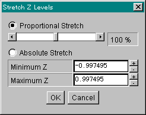

Stretch Z Dialog Box Surface Plotter displays this dialog box when you selected the Edit|Stretch Z Levels menu. The above image is a screen shot of this dialog box on Windows 95 (tm) platform. First you have to choose Proportional Stretch (default) or Absolute Stretch. Do this by clicking the radio button on the left. If you chose proportional stretch, Surface Plotter will stretch (or shrink) the Z levels of surface data by the specified stretching factor (in percent unit). The center value however, remains the same. The stretching factor is changeable in the range of 10% to 200%. Move the scrollbar to change the stretching factor. If you chose absolute stretch, Surface Plotter will recalculate all of the Z levels of surface data so that the maximum and minimum values of the Z levels become the minimum and maximum values specified. Send comments, suggestions, bug reports to Yanto Suryono |